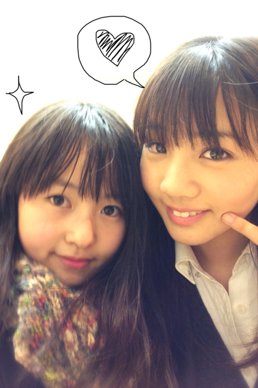

| 2011/11 30 Wed | 13回目*marika |
いつも読んでくださってる方
初めてコメントしてくださった方
ありがとうございます***
やぁやぁっ!!
今日もベビたん更新するぜっ:D!!
なかなかLessonに行けてなくて
今日!みなさんからの
お手紙とプレゼントを受け取りました。
長い間お返事を返せてなくて
すみませんでした><
今日受け取って家に帰って
ゆっくり読もうと思いましたが
耐えられず←電車の中で読みました。
みなさん直筆のあたたかいメッセージに
感動してしまい、その場でじわっと
泣いてしまいました。
今胸がきゅうぅぅぅってなってて、
どうしたらいいのか分からなくて
もう嬉しさでいっぱいです。
3通も書いてくださった方もいて.....
みなさんかわいい便せんで!!
本当に本当にありがとうございます!!
プレゼントも届きました。
めちゃかわいいです*!大切に使います!
もっともっと
頑張ろうって思いました。
もっともっともっと
伊藤万理華を知ってほしいと思いました!
みなさんからもらった全ては
私の励みになります。
これからも応援よろしくお願いします!!
.................................
遅くなりましたが、質問返し♪
・男性に生まれ変わったら何をしたいですか？
男の子にしかできない服装をしたいなぁ...
...っあ!男装すればいいのか!!←
・メンバーで一番の釣り師は誰？
みんなだよ!みんな!
私まできゅんきゅんしちゃうもん!!
・ほんわーって、どんな感じ？
うん。写真を見て感じてください!!*
早速私をいじってきましたね笑
＊みゆさん
5日お遅れになってしまい
本当に本当にごめんなさい;(....
お誕生日おめでとうございました!!
これからもお祝いできたらいいな*
素敵な一年になるよう願っています。
・女優希望？アイドル？モデル？
飾らない自然な女優さんになりたいです!
演技頑張らなきゃ!!
・乃木坂で他メンにこれだけは勝ってることはある？
目が合った瞬間に即変顔できること。
つまり、顔の筋肉を人一倍動かせることです!笑
・W伊藤を伊藤ちゃんずに変更した理由は？
ねねがW伊藤って言ってたのですが
私がなんとなく伊藤ちゃんずって言ったら
それが浸透したんだと思います.....!!
＊まころん♪さん
お誕生日おめでとうございました!!
16歳ですか...!!先越された〜←
私はまだ15歳!(ドヤ
お手紙の質問はまた返しますね!*
これから返事が遅くなることもあると思いますが
なるべくすぐに返せるように努力します!!
誕生日のお祝いもまた遅くなってしまったら
すみません...!!!!
.................................
乃木どこの感想くださってありがとうございました~;D!!
みなさんとっても優しいです。
しゃしん載せちゃう*****

あすか、ひなちま
しっかり者のちまとうきゃきゃなあすかと
最近はしゃいだ笑
もう〜かわいいんだから♡←
今日のしゃしん＊

仲良しのあみと!
最近よく一緒にごはん食べるの。
あみおもしろすぎやね
私ね、あみにすごい顔近づけたくなるの!←
あ、こうやって決め顔してるけどね。
いつもは全然こんなじゃないからね!!笑
そして!!!
いよいよいよいよ
ZEPP東京で大イベントですね!!!!!
テンション高山〜!!
↑今の流行なの。
ぜひ呼んでくださるときは
『ベビたん』でお願いします^^*
30日はノリノリではっちゃけるでぃ!!!!!!
来れない方、外れてしまった方は
ニコニコ見てね＊
私の魅力？を精一杯出したいと思います!
期待しててくださいね***
だいすきなみなさんに元気を与えられたらいいな♪
あっ...!みなさん。
私はみなさんが思ってる以上に
みなさんがだいすきです!♡
うん...それが言いたかったの。
おやすみっ!!!
あ...
長文失礼しました。
ベビたん*****bA by marika